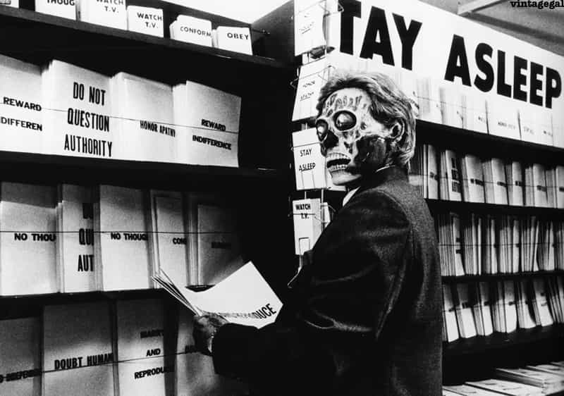
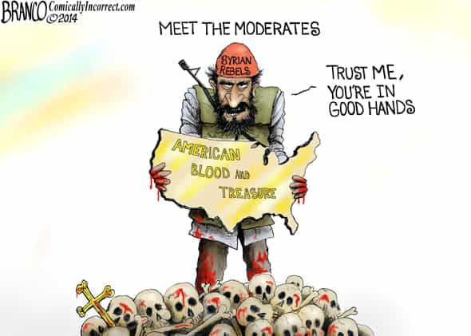

< < < Back
9 Measures To Prevent Future Terrorist Attacks – Return Of Kings
On the 26th of July, two Muslim men entered a small church after mass in Saint-Etienne du Rouvray near Rouen, France. Armed with knives, they took the few nuns and attendees hostage and eventually slit the throat of Father Jacques Hamel, 86.
They recorded and probably live-streamed the event before being gunned down by police. Both of them were well-known criminals, jihad candidates, and one even had an electronic bracelet.
This could have been avoided
As our readers know, I come from Normandy where this happened. From a town just like Saint-Etienne du Rouvray. This could have well happened in the church where my grandmother goes every day.
This occurred after the Nice rampage and a string of terrorist attacks that happened worldwide, during and just after the month of Ramadan. These attacks are against two symbols: French people and Christianity.
If the justice and government had done its part, many more (not just French) people would still be among us.
The perpetrators

The guilt is shared by two factions: the terrorists and the incompetent politicians that do not manage to do what they are paid for: protect their citizens. Western lax governments do not want to intervene to the source, or they would have done it already. They have blood on their hands, plain and simple.
Islamic terrorism can be targeted on three main levels:
- The source (ISIS, its propaganda, radical clerics)
- The middle man (media propaganda promoting immigration, fake refugees sent by ISIS, economical migrant who acts)
- The target (surveillance of churches, security screening, army)
There is only a limited number of blockades, cameras, and soldiers with which the target can be protected. It would be important to first apply measures to the source and the middle man. Here is how.
1. Stop immigration
Reinstate border control and abolish the Schengen zone. No open borders. Use a veto on the German decision to bring refugees in the country. Hungary did it, we need to follow the example.
Legal immigration bans need to be studied individually. Not all citizens of “Muslim” countries can be banned, where the entry would be refused to Vassili, a 40-year-old Orthodox Christian worker from Kazakhstan, and granted to Abdel Karim, an unemployed 23-year-old male from the Djihad ghetto of Molenbeek in Belgium.
2. Remove the elites in power

The French government and others use a textbook ineffective anti-terrorist approach (some accuse them of doing it knowingly): an anti-terrorist “Ligne Maginot,” where you barricade yourself behind patrolling soldiers (less operational forces) and spout more white noise like gallows candidate Manuel Valls’ speech “Get used to live with terrorism”.
More hand holding and unity where there is none. The old “divide and conquer” is recycled as they cannot reinvent the wheel. Recently, the government threatened the surveillance service of the city of Nice if they do not destroy 24 hours of video recording on the day of the terrorist attack. To hide their blatant mistakes, or cover their tracks?
Governments that act in this fashion cannot be trusted and need to be exposed and removed. Let’s get rid of those clowns and install conservative, nationalist governments. Voters have to impose requirements to the candidate. He needs to say no to political correctness and efficiently fight the problem and put it in words: Islam wants us dead.
3. Target the terrorist’s family
Souad Merah, Mohammed Merah’s sister. After her brother’s death during his murderous raid and even after she flew to Syria, she was still receiving 2000 euros a month in benefits
Let’s use the counter-insurgency method that Russia uses in Chechnya by focusing on the families of the wannabe jihadis. They do not care about their own lives, it is clear. But they might think twice if the well-being of their parents and relatives are threatened.
Many of recent terrorists attacks involved siblings working together. The family must be considered by default as accomplices. They see them preparing an attack, they do not report, they are guilty.
Demolish their houses if it is their property or evict them as it is often done in Israel and Russia. Create a national file with internet providers, refusing them any web access on multiple devices, similar to national gun ownership databases or most wanted lists.
Children of terrorists are not responsible and under a certain age, should be placed in the custody of the state or deported with the mother if they have dual citizenship.
4. Control the source and their media
ISIS capitalizes on isolated elements in Europe and the West in addition of the trained agents that they sent from Syria to act. The native elements share common flaws: hate of the host culture, boredom, no solid plans for the future, sexual frustration.
They are sitting on their arse, fascinated by the well-edited videos of the Islamic State, thinking how they could make a difference. Remove this material and they will stay in their loop of inactivity, joint smoking and TV binge.
Conservative gay man Milo Yiannopoulos is censored on Twitter while ISIS-owned Amaq Agency still has a platform. We know why.
Legal decision must be taken by the government against firms such as Twitter, that still relay terrorists messages after investigation of their nature. They should be indicted for treason.
An attack on the brand that is ISIS is also a good start as Mike Cernovich details in one of his recent articles.
Active contributors to jihad-friendly sites could use VPNs, or public wifi where they could be monitored. The providers of public wifi should do their job and forbid the access to Islamic propaganda material like they do with porn or torrent websites (or the Roosh V Forum).
5. Cut the funding

Revoke the benefits received by potential terrorists and their immediate family and their internet connection. Publish the names of all the terrorists, those condemned in terrorism related trials (name, age, physical description, address).
See if there is any legal way to seize or freeze the money they send to their family from racket or criminal activities or the one they send just before launching their attack. Freeze the funds that the parent organizations send to the terrorist’s family.
Expose and confront ISIS backers, point at powers like Turkey, the Saudis or your own government that support them and spread the word.
6. Create strong native men
Another root of the problem is our men being weak. ISIS explains it, they “need to inspire fear in our hearts.” We should reverse the situation.
Our men need to develop a sense of strength and resilience, in body and mind. It is much harder to intimidate someone that is armed, resourceful, well organized and can manage fear and act under pressure.
You can also not stand alone. You can be a highly trained soldier with state of the art equipment, enough stick-thin idiots with rocks will be able to kill you. You need to have a tribe to count on.
7. Reform the laws
We need an effective justice system with prison terms without remission, adapted specifically to radical Islam targeting the host culture. The laws need to condemn those who clearly have the intention to join terrorist factions overseas.
Reinstate the death penalty for convicted terrorists if apprehended alive. Adapt it in the way that according to Islam, the condemned won’t reach Heaven. Lethal injection of alcohol and pig blood laced with cyanide after forcing them to sign a written statement where they renounce and disavow Islam and the teachings of the prophet could work.
We must allow law abiding citizens to arm themselves. Background checks should prevent people from purchasing weapons; especially if:
- They have a criminal record or have been institutionalized
- They have been affiliated with Islamic groups in any way
Dual citizenship criminals need to be deported and stronger requirements for acquiring citizenship should be applied, favouring jus sanguinis over jus soli.
8. Prevent radicalisation in prisons
Radicalism is often encountered in prison and is a global phenomenon—with less distraction and being constantly around the same radicalized people, budding terrorists assimilate and learn the trade.
Control access of inmates to Islamic material and imams visiting prisons. They are not required by their religion. It was imposed in prisons of the Western world to be more “compassionate.”
Remove imams, separate inmates during prayer time as it would be materially difficult to prevent them from praying alone. Isolate them in cells with no windows so they cannot find Mecca.
Stop granting them privileges like allowing them to eat at night during Ramadan. Remove their special menus. Let them starve if they don’t want to eat pork. Now even the terrorist who took part in the Bataclan shootings is allowed special treatment with a private sports room.
In places like France, prisons are overpopulated and over 70% of the inmates are Muslims. To separate them, we need more prisons.
9. Make the media accountable

We have to be ruthless with our lying media, exposing them and their agenda while proposing alternative sources of information.
Mainstream media constantly downplays the horror of the terrorist attacks to avoid a reaction of anger from the natives, by omitting barbarous acts, finding the terrorists excuses, rephrasing their headlines (like some left-wing French newspapers said that the Normand priest Jacques Hamel was just “killed” instead of having his throat slit like a slaughtered animal) or changing the names of perpetrators so they sound less Muslim.
Their dishonesty needs to stop. This method is efficient as we see that lying firms such as Twitter or Gawker cannot lie without suffering consequences. The brand suffers from bad publicity.
En fin de compte
This set of measures is a double-edged sword. If the people that reach power have their own agenda and a community like the manosphere goes against it, such measures could be enforced on us. Hence the importance of choosing our leaders wisely.
A pledge incorporating this type of requirements should be signed by the leaders we intend to vote for. Choose the lesser of a few evils as eventually you can only count on yourself and the tribe you trust.
 If you like this article and are concerned about the future of the Western world, check out Roosh's book Free Speech Isn't Free. It gives an inside look to how the globalist establishment is attempting to marginalize masculine men with a leftist agenda that promotes censorship, feminism, and sterility. It also shares key knowledge and tools that you can use to defend yourself against social justice attacks. Click here to learn more about the book. Your support will help maintain our operation.
If you like this article and are concerned about the future of the Western world, check out Roosh's book Free Speech Isn't Free. It gives an inside look to how the globalist establishment is attempting to marginalize masculine men with a leftist agenda that promotes censorship, feminism, and sterility. It also shares key knowledge and tools that you can use to defend yourself against social justice attacks. Click here to learn more about the book. Your support will help maintain our operation.
Read More: 80+ Killed In New French Attack, Police Don’t Want Video Uploads To Compromise Narrative